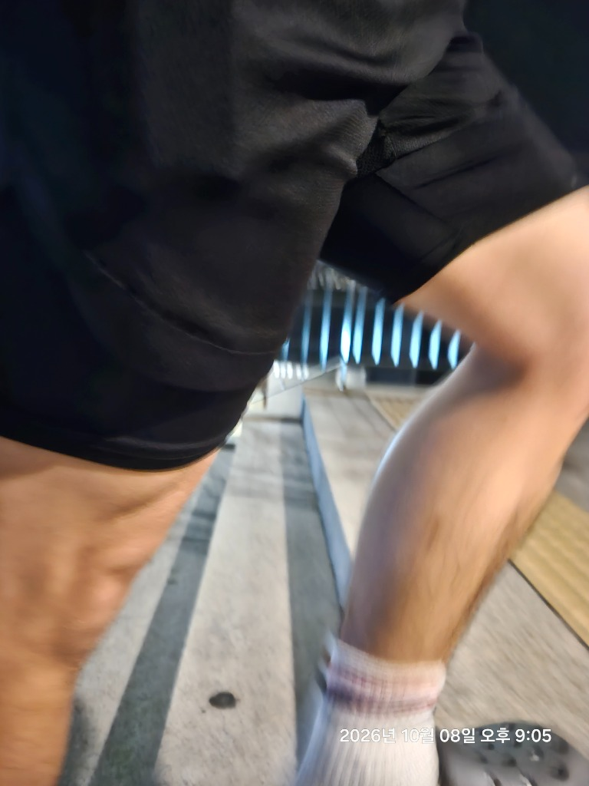

러너들이 겪는 부상의 90%는 '밀어내는 힘'이 부족해서가 아니라, 착지 순간 체중의 3배로 내리꽂히는 충격을 '버텨내며 늘어나는 브레이크(편심성 수축)' 능력이 떨어지기 때문입니다. 아파트 계단 문턱이나 주로의 계단 단차를 활용해 아킬레스건과 슬개건을 강철처럼 리모델링하는 편심성(Eccentric) 보강 루틴을 공개합니다.

📸 5,000km 러너의 실전 에셋: 훈련 전후 아파트 비상계단 단차를 이용해 종아리(비복근·가자미근)와 대퇴사두근을 편심성(Eccentric)으로 신장시키는 보강 훈련. 뒤꿈치를 계단 밑으로 지그시 내리며 힘줄(Tendon)의 콜라겐 정렬을 유도합니다.
1. 러너에게 왜 '편심성(Eccentric) 수축'이 부상 방지의 핵심인가?
근육의 수축 형태는 크게 두 가지입니다:
- 단축성 수축(Concentric): 근육 길이가 짧아지며 힘을 냄 (예: 까치발 들기, 계단 올라가기).
- 편심성 수축(Eccentric): 근육이 늘어나면서 브레이크처럼 힘을 버팀 (예: 착지 순간 무릎이 굽혀지며 대퇴사두근이 충격을 흡수하는 동작, 뒤꿈치가 내려가며 종아리가 늘어나는 동작).
러닝 중 발생하는 무릎 슬개건염(러너스 니), 신스프린트, 아킬레스건염은 100% 편심성 제동 부하가 건(Tendon)의 한계치를 초과했을 때 발생합니다. 근육을 짧게 쥐어짜는 일반 헬스 운동보다, 근육이 늘어나면서 하중을 버티는 훈련을 해야만 주로에서 착지 충격 흡수력이 2배 이상 강화됩니다.
2. 계단에서 실행하는 러너 필수 3대 편심성 드릴
1. 계단 힐드롭 (알프레드슨 변형)
• 타겟: 아킬레스건 & 가자미근
• 동작: 계단 끝에 발 앞꿈치만 걸치고 양발로 올라선 뒤, 한쪽 발로만 3초에 걸쳐 천천히 뒤꿈치를 계단 아래로 하강시킵니다.
• 핵심: 올라올 때는 반대발의 힘을 빌려 올라오고, 내려갈 때만 환측 발로 천천히 버티는 것이 편심성 훈련의 핵심입니다. (15회 × 3세트)
2. 편심성 스텝다운 (Step-Down)
• 타겟: 내측광근(VMO) & 슬개건 충격 흡수
• 동작: 계단 위에 한 발로 선 상태에서, 반대쪽 발뒤꿈치를 계단 아래 바닥으로 4초 동안 아주 천천히 내리며 지면에 살짝 터치하고 돌아옵니다.
• 핵심: 지지하는 무릎이 안쪽으로 돌아가지(Valgus) 않도록 둘째 발가락 방향을 유지하며 버팁니다. (10회 × 3세트)
3. 무릎 굽힌 가자미근 딥스
• 타겟: 심부 종아리 가자미근(Soleus)
• 동작: 무릎을 20~30도 살짝 구부린 상태를 유지하며 계단 끝에서 힐드롭을 수행합니다.
• 핵심: 무릎을 굽히면 비복근의 개입이 꺼지고, 러닝 착지 시 충격의 70%를 담당하는 가자미근에 부하가 집중 타겟팅됩니다.
3. 과학적 효과: 힘줄(Tendon)의 콜라겐 섬유 재배열
아킬레스건이나 슬개건은 혈류 공급이 적은 저혈관성 조직(Bradytrophic Tissue)이기 때문에 단순 휴식만 취하면 손상된 콜라겐 섬유가 엉망으로 엉킨 채(흉터 조직) 굳어버립니다. 계단을 이용한 점진적 편심성 하중은 건 세포의 기계적 신호전달(Mechanotransduction)을 촉발하여, 제1형 콜라겐 섬유를 주행 방향과 평행하게 정렬시켜 탄성 복원력을 회복시킵니다.
4. 실전 가이드: 주 2회, 언제 수행해야 하는가?
- 러닝 직후 쿨다운 시점 추천: 근육과 힘줄의 온도가 충분히 올라가 유연성이 확보된 달리기 직후 아파트 엘리베이터 앞 비상계단에서 8~10분간 수행하는 것이 가장 효과적입니다.
- 통증 척도(VAS 1~3/10) 허용: 편심성 운동 중 뻐근하거나 약한 당김(10점 만점에 2~3점 수준)은 힘줄 리모델링 과정의 정상 반응입니다. 다만 찌르는 듯한 날카로운 통증(5점 이상)이 발생하면 즉시 각도를 줄여야 합니다.
🫀 부상 없이 회복하는 내 몸의 안전 심박수는?
건과 관절에 무리를 주지 않고 유산소 베이스를 쌓는 나만의 카보넨 Zone 1~2 안전 회복 심박수를 확인해보세요.
🫀 카보넨 정밀 심박존(Zone 1~5) 계산기 실행하기 ›- Alfredson, H., et al. (1998). Heavy-load eccentric calf muscle training for the treatment of chronic Achilles tendinosis. The American Journal of Sports Medicine, 26(3), 360-366.
- Purdam, C. R., et al. (2004). A pilot study of the eccentric decline squat in the management of patellar tendinopathy. British Journal of Sports Medicine, 38(4), 395-397.
- Feland, J. B., et al. (2001). The effect of eccentric contractions on tendon mechanical properties. Journal of Biomechanics, 34(5), 651-657.